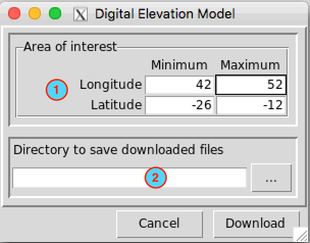
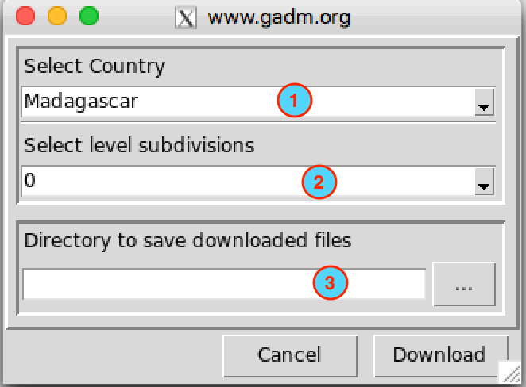
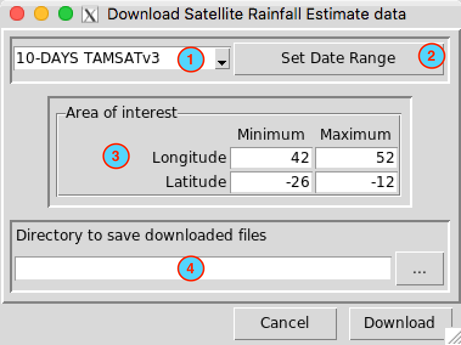

Download Data
Download DEM
The menu allows to download the elevation data from a global DEM (Digital Elevation Model) extracted at any wanted area with a spatial resolution of 1 and 2 arc-minute.

- Set the bounding box of the area to be downloaded. Type in the fields the minimum and maximum of the longitude and latitude in degree decimal.
- Specify the folder to save the downloaded DEM by browsing it from the button
 or typing the full path to the folder.
or typing the full path to the folder.
Two files in NetCDF format will be downloaded into the folder you specified in (2):
- DEM_1_Arc-Minute.nc: ETOPO1 Grid Registered 1 Arc-Minute Global Relief Model.
- DEM_2_Arc-Minute.nc: ETOPO2v2c Global Gridded 2-minute elevation and bathymetric data.
Download Country boundary
The menu allows to download the country outlines and administrative subdivisions for countries in Africa from GADM data.

- Select the country from the drop-down list.
- Select the administrative subdivisions to download. 0 is the country boundaries, 1 is the first subdivision (example: Region), 2 the second subdivision (example: District), …
- Specify the folder to save the downloaded ESRI shapefile by browsing it from the button or typing the full path to the folder.
Download RFE
The menu allows to download satellite rainfall products at daily and dekadal (10-days) temporal resolution.

- Select the satellite rainfall estimate product to download. For dekadal rainfall, 4 choices are available: 10-DAYS TAMSATv3 (Africa), 10-DAYS TAMSATv2 (Africa), 10-DAYS CHIRPSv2.0 (Global) and 10-DAYS CHIRPv1.0 (Global); for daily rainfall, you have 3 choices: DAILY TAMSATv3 (Africa), DAILY TAMSATv2 (Africa) and DAILY CHIRPSv2.0 (Global).
- Set the date range of the data to download. See Setting date range for more details.
- Set the bounding box of the area to be downloaded. Type in the fields the minimum and maximum of the longitude and latitude in degree decimal.
- Specify the folder to save the downloaded rainfall data by browsing it from the button or typing the full path to the folder.
A folder containing the downloaded rainfall extracted over the area you specified in (3) will be created under the directory you provided in (4).
- Dekadal_TAMSATv3_Extracted: dekadal rainfall from IRIDL TAMSATv3
- Dekadal_TAMSATv2_Extracted: dekadal rainfall from IRIDL TAMSATv2
- Dekadal_CHIRPSv2.0_Extracted: dekadal rainfall from IRIDL CHIRPSv2.0
- Dekadal_CHIRPv1.0_Extracted: dekadal rainfall from IRIDL CHIRPv1.0
- Daily_TAMSATv3_Extracted: daily rainfall from IRIDL TAMSATv3
- Daily_TAMSATv2_Extracted: daily rainfall from IRIDL TAMSATv2
- Daily_CHIRPSv2.0_Extracted: daily rainfall from IRIDL CHIRPSv2.0